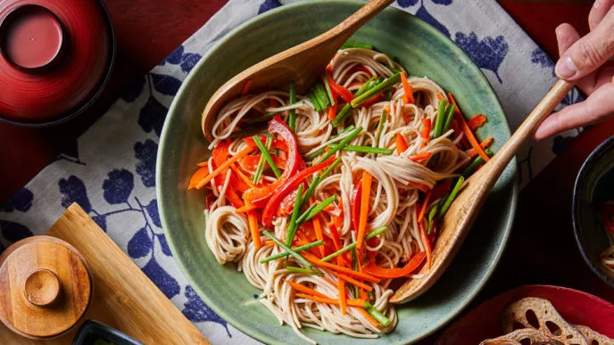

Soba Noodle Salad

Description
Ginger-citrus flavours with crunchy vegetables and earthy soba noodles.
This Japanese inspired noodle salad can be served warm or cold.
Ingredients
- 3 tablespoons vegan yuzu ponzu, such as Marukan brand
- 3 tablespoons brown rice vinegar
- 2 teaspoons grated fresh ginger
- 6 oz. dry soba noodles
- 1 cup matchstick-cut carrots
- 1 cup matchstick-cut red or yellow bell pepper
- ½ of a bunch Japanese chives (garlic chives) or regular chives, cut into 2-inch pieces (1 cup)
Steps
- For dressing, in a large bowl whisk together yuzu ponzu, vinegar, ginger, and ¼ cup water.
- In a large pot of boiling water cook noodles according to package directions, adding carrots, bell pepper,
and chives the last 5 minutes of cooking. Drain. Transfer noodle mixture to bowl with dressing; toss to coat.
- Serve warm or chilled. If noodles seem dry, toss with 1 to 2 tablespoons of water or vegetable broth before serving.
Time taken: About 30 minutes
Back home